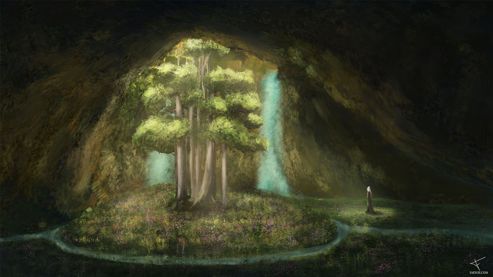

Facing The Elders
“… The ground beneath me hummed with life, but I could feel the trees watching me. Every bit of fauna inside the cave waltzed along the breeze which entered from above. Except for them.”
Behold the result of sitting at home for a week with a knee injury. At least something good came out of that.